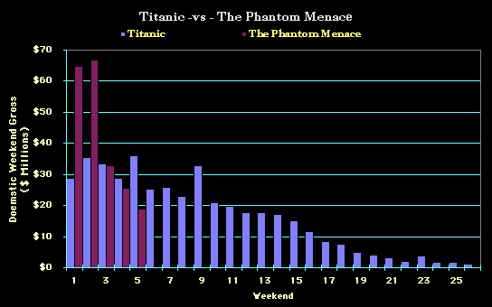
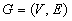
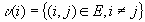
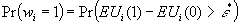
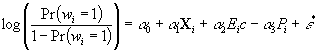
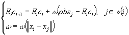
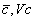
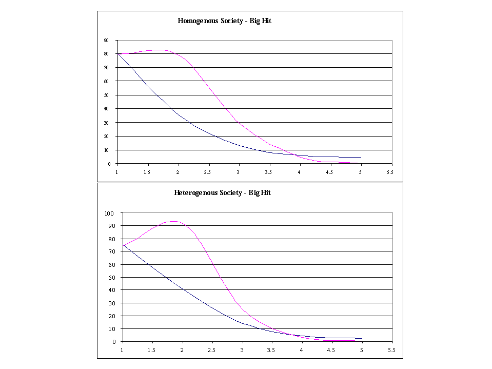

of Mouth Recommendation
David Robalino & Mike Gibney
Introduction & Motivation
We wanted to examine the demand for a movie over time with particular attention to the role played by social networks in determining the behavior of the potential audience. As an organizing question we asked: If a theatre manager was able to give away a number of free tickets to a performance, what strategies should he adopt in order to best promote different types of movie? Secondly would the manager be able to discriminate between the impact on demand of the properties of the movie itself and the social characteristics of the potential market place? In addressing these questions we would like to understand the emergence of two phenomena: a) why socially accepted good movies may have low success while bad movies have good success; b) why the demand for a given movie starts to expand only late in its release cycle.

Figure 1: Historical Demand Data for Two well known Movies
The Model
We constructed a model of a community of networked agents
randomly distributed in a two dimensional space. To formalize this idea
we define a graph:
 (1)
there V is the set of vertices and E is the set of edges. As usual we define the neighborhood of an agent i by the set:
 (2)
We assume that the probability of two agents being connected is given as a function of their distance through an exogenously defined connectivity parameter m.
To formalize agents’ decision of going to the movie we use a simple binomial choice model. Hence, we assume that the utility that a given agent derives by watching a movie depends on its individual characteristics as well as its expectations about the quality of the movie. The expected utility for an agent i of undertaken choice w={1=watching a movie, 2=not watching the movie} is given by:
 (3)
(3)
where x~N(Ex,Vx) is a vector of agents’ characteristics,
Ec
the agent expectation about the quality of the movie is also normally distributed
(c ~N( ) ),
P is the cost
of the movie and e is a random shock. Therefore,
the probability that an agent i will watch the movie is given by:
) ),
P is the cost
of the movie and e is a random shock. Therefore,
the probability that an agent i will watch the movie is given by:

(4)
Under the assumptions that e is extreme value distributed we can write:

(5)
Equation (5) is the expression that we use to compute
the probability that a given agent will watch the movie. To implement this
calculation we first need to define an expression for the dynamics of Ec.
To do so we a very simple learning model that assumes that agents learn
about the quality of a movie from their neighbors. Of course, an agent
also learns about the quality of movie by watching the movie. To formalize
these ideas we define:

(6)
where w is a weight that agents put in their observations. This weigth depends on how different is the agent that provides the information. When obs results from the agent watching the movie we have w =1.
Results
General Model Dynamics
The model has eight parameters (a0 , a1, a2, a3, Ex,Vx, , m). These parameters where calibrated to replicate observed dynamics in the demand for movies (see Figure 1). In Figure 2 we present a sample of three Monte Carlo simulation of the model. The Y-axis represents the audience while the X-axis represents time measured in days. We observe that the demand for a given movie can have very different dynamics depending on initial agents expectations. Hence in the blue line, the demand for the movie peaks early and falls relatively quickly (a path similar to the one observed in Figure 1). On the other hand, the green lines shows a dynamics where the demand for the movie starts to increase only late in the release after more information has become available.

Figure 2: Three Samples of Possible Dynamics for the Demand for Movies
Effects of Connectivity and Heterogeneity
In a second type of simulation, we computed the average path over 50 Monte Carlo simulations of the demand for movies, for four sub-regions of the parameter space defined by the following two pairs. 1) Densely and Sparsely Connected Societies; and 2) Homogeneous and Heterogeneous Communities of Agents.
The results of this simulation are presented in Figure 3. The Y-axis represents the number of agents viewing the movie in any single time step, and X-axis represents the number of weeks. We observe that both connectivity and heterogeneity have important effects in the dynamics of the demand for movies. In particular in more connected societies the demand for good movies tends to stay at high levels for longer periods of time. We also observe that in more heterogeneous societies the demand for good movies increases faster during the first weeks and reaches a higher peak. One possible explanation for this phenomena is that in heterogeneous societies negative information about movies has less impact on agent's expectations.

Figure 3: Demand for Good Movies
Conclusions
An interesting result from the analysis is that the vagaries of history are likely to important determinants of the demand for movies. Hence, good movies may end up having low demand while bad movies can have high demand., depending on the initial agents expectations and their propagation through the social network.
As expected, densely connected social networks promoted demand for good movies and depressed the demand for bad ones. This makes sense because densely connected networks favor the propagation of information through the society. More interestingly still, heterogeneous societies encouraged demand for good movies even more strongly than homogenous societies. This result ran counter to our initial intuition that homogenous societies propagated information more efficiently because agents trusted each others opinions more strongly in such societies. We conjecture that heterogeneous agents discount the incorrect information they receive that the movie is a bad one that they receive early in the simulation.
david_robalino@rand.org & M.A.Gibney@qmw.ac.uk